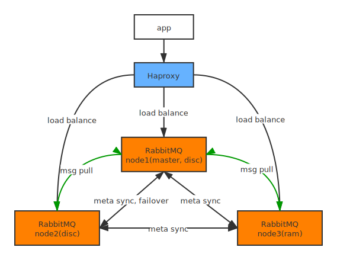

last modified by zhoutianju , 2021-02-05 14:34:39
RabbitMQ HA 集群部署
参考资料
https://objcoding.com/2018/10/19/rabbitmq-cluster/
HA 部署架构图
- 普通集群（无镜像队列）
多磁盘节点可实现元数据 HA，但主节点挂了会丢失未消费的消息

- 镜像队列集群
多磁盘节点可实现元数据 HA，同时镜像队列可以保证主节点挂了也不会丢失未消费的消息，但会增加镜像队列节点的网络、存储开销
同步 Erlang Cookie
- node1
cat ~/.erlang.cookie
# 复制文件内容
- node2、node3
# 先把服务停掉
rabbitmqctl stop
# 修改 Erlang Cookie
chmod +w ~/.erlang.cookie
echo {node1 文件内容} > ~/.erlang.cookie
chmod -w ~/.erlang.cookie
# 启动服务
rabbitmq-server -detached
加入集群
关于 RabbitMQ 节点的域名：
默认使用短域名，即服务器上运行
hostname -s得到的结果
- node2（磁盘节点）
# 因为修改了 .erlang.cookie 用 rabbitmqctl stop_app 可能杀不死，需要用 kill 杀
rabbitmqctl stop_app
rabbitmqctl reset
rabbitmqctl join_cluster rabbit@${node1_hostname}
rabbitmqctl start_app
- node3（内存节点）
rabbitmqctl stop_app
rabbitmqctl reset
rabbitmqctl join_cluster --ram rabbit@${node1_hostname}
rabbitmqctl start_app
关于镜像队列
目前只配置了 2 个磁盘节点，1 个内存节点，用于备份元数据，基于 DP 的场景队列和消息生存周期较短，没有做镜像队列。其他业务可根据需求配置。
rabbitmqctl set_policy ha-other-app "^other-app." '{"ha-mode":"nodes","ha-params":["rabbit@nodeA", "rabbit@nodeB"]}'
HAProxy 负载均衡
安装 HAProxy
# 指定一个你自己的安装路径
INSTALL_DIR='/opt'
cd $INSTALL_DIR
# 安装 HAProxy
wget http://www.haproxy.org/download/2.2/src/haproxy-2.2.2.tar.gz
tar -xzvf haproxy-2.2.2.tar.gz.tar
cd haproxy-2.2.2
make TARGET=linux-glibc PREFIX=$INSTALL_DIR/haproxy && make install PREFIX=$INSTALL_DIR/haproxy
echo "HAPROXY_HOME=$INSTALL_DIR/haproxy" >> ~/.bash_profile
echo 'export PATH=$PATH:$HAPROXY_HOME/sbin' >> ~/.bash_profile
source ~/.bash_profile
# 写入重启命令
echo '#! /bin/bash
cd $(dirname $0)/..
haproxy -f haproxy.cfg -p haproxy.pid -sf $(cat haproxy.pid)' >> $INSTALL_DIR/haproxy/sbin/haproxy-reload
chmod +x $INSTALL_DIR/haproxy/sbin/haproxy-reload
# 配置文件，参考下一小节
vi $INSTALL_DIR/haproxy/haproxy.cfg
# 重启命令执行
haproxy-reload
配置
# 全局配置
global
log 127.0.0.1 local2
# chroot /var/lib/haproxy
pidfile /opt/haproxy/haproxy.pid # 替换成实际的安装目录
maxconn 20000
# user haproxy
# group haproxy
daemon
# 默认配置
defaults
log global
mode tcp
option tcplog
option dontlognull
retries 3
option redispatch
maxconn 20000
timeout connect 5s
timeout client 120s
timeout server 120s
# rabbitmq 消息服务代理
listen rabbitmq_cluster
bind 0.0.0.0:5670
mode tcp
balance roundrobin
server rabbit1 ${node1_hostname}:5672 check inter 5000 rise 2 fall 2
server rabbit2 ${node2_hostname}:5672 check inter 5000 rise 2 fall 2
server rabbit3 ${node3_hostname}:5672 check inter 5000 rise 2 fall 2
# rabbitmq stomp 服务代理
listen rabbitmq_cluster_stomp
bind 0.0.0.0:61610
mode tcp
balance roundrobin
server rabbit1 ${node1_hostname}:61613 check inter 5000 rise 2 fall 2
server rabbit2 ${node2_hostname}:61613 check inter 5000 rise 2 fall 2
server rabbit3 ${node3_hostname}:61613 check inter 5000 rise 2 fall 2
# Haproxy 后台监控
listen admin_stats
bind 0.0.0.0:8100
mode http
option httplog
stats enable
stats uri /stats
stats refresh 5s
HAProxy 自身 HA
可通过 Keepalived 实现
Copyright © 2021 zhoutianju.
All rights reserved.
All rights reserved.